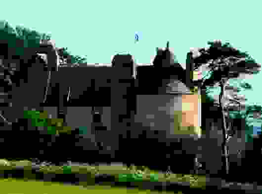

1° There'll never be Peace till Jamie comes hame
1° Qu'on pose les armes
by Robert Burns
followed by"By Carnousie's Auld Wa's" - "Près de Carnousie"
to the same tune.Tune - Mélodie
Variant
Scots Musical Museum Volume IV N°315 page 326, 1792
and Hogg's "Jacobite Relics" 1st Series N°38 (Hogg remarks: "It is very like Burns")
Sequenced by Christian Souchon
Sheet music - Partition
|
To the tune:
The tune is in Oswald's "Curious Scots Tunes", 1740, 22, and the same publisher's "Caledonian Pocket Companion", 1743, I. 20, with the title as in the text; and in McGibbon's "Scots Tunes", 1742, 30, entitled "There'll never be peace till Jamie comes hame". Source "Complete Songs of Robert Burns Online Book" (cf. Links). |
A propos de la mélodie:
Ce chant figure dans le recueil "Curious Scots Tunes" d'Oswald, 1740, 22 et dans son "Vadémécum du Calédonien", 1743, i, 20 sous un titre identique au refrain. Il se trouve également dans les "Scots Tunes" de McGibbon, 1740, 30, où son titre est "There'll never be peace till Jamie comes hame". Source "Complete Songs of Robert Burns Online Book" (cf. Liens). |
|
To the text:
The MS. is in the British Museum. A copy was sent to Alexander Cunningham, Edinburgh, on March 12, 1791, in a letter, in which Burns says : ' You must know a beautiful Jacobite air "There'll never be peace till Jamie comes hame". When political combustion ceases to be the object of princes and patriots, it then, you know, becomes the lawful prey of historians and poets. If you like the air, and if the stanzas hit your fancy, you cannot imagine, my dear friend, how much you would oblige me if, by the charms of your delightful voice, you would give my honest effusion to "the memory of joys that are past" to the few friends whom you indulge in that pleasure.' The following note is in the Interleaved' Museum by Burns: ' This tune is sometimes called " There's few good fellows when Willie's awa," — but I never have been able to meet with anything else of the song than the title.' ' The song referred to is unknown; it was on the Stuarts, and was probably suppressed. Source "Complete Songs of Robert Burns Online Book" (cf. Links). |
A propos du texte:
Le manuscrit est au British Museum. Burns envoya une lettre à Alexander Cunningham à Edimbourg, le 12 mars 1791, disant: 'Vous connaissez certainement le bel air Jacobite "Qu'on pose les armes". Quand la politique cesse d'enflammer le cœur des princes et les patriotes, vous savez, que cette proie revient de droit aux historiens et aux poètes. Si l'air vous plait et si les strophes parlent à votre imagination, vous ne savez pas, mon cher ami, quel plaisir vous me feriez, si, par le charme de votre voix merveilleuse, vous transmettiez à quelques amis l'enthousiasme de bon aloi que j'éprouve pour "ce souvenir de joies qui ne reviendront pas."' La note suivante, de la main de Burns, est tirée du "Musée interfolié": "Cette chanson est parfois appelée 'Il ne restera plus grand monde quand Guillaume s'en ira'; mais je n'ai jamais pu apprendre rien d'autre à son sujet que ce titre." On ne sait pas à quel chant il fait allusion. S'il concernait les Stuart, il a sans doute été interdit. Source "Complete Songs of Robert Burns Online Book" (cf. Liens). |

|
1. By yon Castle wa’, at the close of the day,
I heard a man sing, tho’ his head it was grey: And as he was singing, the tears doon came,— There’ll never be peace till Jamie comes hame. 2. The Church is in ruins, the State is in jars, Delusions, oppressions, and murderous wars, We dare na weel say’t, but we ken wha’s to blame,— There’ll never be peace till Jamie comes hame. 3. My seven braw sons for Jamie drew sword, But now I greet round their green beds in the yerd; It brak the sweet heart o’ my faithful and dame,— There’ll never be peace till Jamie comes hame. 4. Now life is a burden that bows me down, Sin’ I tint my bairns, and he tint his crown; But till my last moments my words are the same,— There’ll never be peace till Jamie comes hame. Jamie=James (VIII), the "Old Chevalier" |
1. Au pied du château, lorsque tombait le soir,
J'entendais un chant rempli de désespoir: Celui d'un vieillard dont coulaient les larmes,— "Roi Jacques, reviens, qu'on pose les armes! 2. L'Eglise est en ruine et l'Etat brisé, Mensonges, oppression, combats meurtriers, Et nous savons bien qui mérite le blâme,— Roi Jacques, reviens, qu'on pose les armes! 3. Pour Jacques mes sept fils ont guerroyé; Au cimetière ils dorment désormais; Ces deuils ont brisé le cœur de ma femme— Roi Jacques, reviens, qu'on pose les armes! 4. La vie n'est plus qu'une charge incommode Pour moi sans enfants, pour toi sans couronne; Je crie jusqu'au jour où je rendrai l'âme: Roi Jacques, reviens, qu'on pose les armes!". Traduction: Christian Souchon(c)2004 |
|
Jacobitism can be said to have begun on 4th April 1689. On that date a convention parliament declared that James VII had forfeited the Scottish throne.
Because of the Covenanters of South-West Scotland, who were at this point quite willing to commit 'godly murder', the Jacobites left the Parliament in Edinburgh. This left the Parliament free to produce the famous "Claim of Right" - the statement of the offences of James. The three main elements of this statement that were important for the future were: - James had forfeited the Crown: - no 'Papist' could be king: - and 'Prelacy and the superiority of any office in the Church above Presbyters, is, and hath been a great and insupportable grievance and trouble to this Nation'. Although the Jacobites had left Parliament to the Presbyterians Scotland north of the Tay was largely Jacobite territory and the majority of the existing clergy would not support William. |
On peut dire que le Jacobitisme est né le 4 avril 1689. A cette date une convention du parlement déclara que Jacques VII ne pouvait plus prétendre au trône d'Ecosse.
Du fait des Covenantaires du sud-ouest écossais qui à cette époque se disaient prêts à commettre des "meurtres pour l'amour de Dieu", les Jacobites quittèrent le Parlement d'Edimbourg. Cela permit aux parlementaires de rédiger la "Proclamation des Droits", une liste de violations commises par Jacques; Les trois éléments de cette déclaration qui furent importants pour l'avenir étaient: - Jacques avait perdu tout droit sur la couronne. - aucun 'Papiste' ne pourrait régner à l'avenir. - et 'Prélats et offices occupant dans l'Eglise un rang supérieur à celui des Prêtres sont et ont toujours été une source importante et intolérable d'injustices et de troubles pour cette Nation". Même si les Jacobites avaient abandonné aux Presbytériens le Parlement, l'Ecosse au nord de la Tay était en large majorité jacobite et la plus grande partie du clergé de l'époque devait refuser son soutien à Guillaume. |
|
|
|
2° By Carnousie's Auld Wa's
2° Près des vieilles murailles de Carnousie
Aftermath of Culloden - Après Culloden
|
From the Appendix of Jacobite Songs to Alexander McDonald's
"Wanderings of Prince Charles Stuart and Flora McDonald", edited by
Peter Buchan
.
Anonymous. Evidently this song, composed 60 years after Culloden (in 1806), is a pastiche of the precedent or it is derived from the same original source. |
Tiré de l'annexe "Chants Jacobites" aux "Errances du Prince Charles et de Flora McDonald" d'Alexandre McDonald, publiées par
Peter Buchan
.
Anonyme. Composé 60 ans après Culloden (en 1806), c'est à l'évidence un pastiche du chant précédent ou l'adaptation d'une source commune. |
|
1. By Carnousie's auld wa's, at the close of the day, [1]
An auld man was singing, wi' locks thin and grey, And the burden o' his sang, while the tears fast did fa', Was, there'll never be peace sin' Charlie's awa 2. Our kirk's gaen either to ruin again, Our state's in confusion, and bravely we ken, Tho' we darena weel tell wha's to blame for it a', And we'll never see peace sin' Charlie's awa'. 3. My sire and five brethren wi' Charlie they gaed, On the muir o' Culloden now green grows their bed, I ran wi' my life, O how didna I fa', For nae pleasure I've seen sin' my Prince was awa'. 4. Our auld honest master, the laird o' the lan', He bauldly set aff at the head o' the clan, But the knowes o' Carnousie again he ne'er saw, An' a's gaen to wreck sin' Charlie's awa'. 5. Yon pale Lammas moon has come threescore times roun' [2] Sin' my laird tint his lan', an' my Prince missed his crown; Threescore years I've wandered without house or ha', For I'll never see pleasure sin' Charlie's awa'. Source: "Jacobite Songs and Ballads" edited by Gilbert Samuel McQuoid, London, 1888, N° 148, page 311. |
1. Tout près de Carnousie, lorsque tombait le soir, [1]
J'entendis un vieillard à la tête blanchie Murmurer en pleurant un chant de désespoir Dont le refrain disait: "Point de paix sans Charlie!" 2. Notre état se démet, cela nous le savons Notre église est en ruine, à peine rebâtie, Nul ne désigne le fauteur de confusion, Mais, chacun le sait bien: "Point de paix sans Charlie!" 3. L'herbe de Culloden sur six tombes verdit. Mes cinq frères, mon père ont, là, laissé leur vie. Si moi je vis encor, c'est parce que j'ai fui. Que de malheurs depuis qu'est loin de nous Charlie. 4. Notre maître si cher, le seigneur de ces lieux Qui, suivi de son clan, a quitté Carnousie, Ne devait plus jamais sur lui jeter les yeux. Son manoir fut détruit au départ de Charlie. 5. La lune de Lammas a fait soixante tours [2] Depuis qu'il essuya l'humiliante avanie. Soixante années aussi que j'erre, nuit et jour; Sans asile et sans joie, je regrette Charlie. (Trad. Christian Souchon (c) 2010) |
|
[1]
Carnousie
: North -west of Aberdeen is famous for salmon, sea and brown trout fishing in the river Deveron. The "Old House of Carnousie" was built by the
Ogilvies
. Several representatives of this family were attainted for the part they took in the 1715 and 1745 risings.
David 6th earl Ogilvy
of Airlie brought 600 men to Prince Charles's standard. In 1778 a pardon was granted to his son in consideration of his extreme youth at the time of 1745.
[2] Lammas Day August 1 is Lammas Day (loaf-mass day), in Anglo-Saxon countries, the festival of the wheat harvest, and is the first harvest festival of the year. On this day it was customary to bring to church a loaf made from the new crop. In many parts of England, tenants were bound to present freshly harvested wheat to their landlords on or before the first day of August. In the Anglo-Saxon Chronicle, where it is referred to regularly, it is called "the feast of first fruits". Lammas was one of the four Scottish quarter days dividing the legal year, when rent and interest on loans, and ministers' stipends were due, and when servants were hired and paid. Also on these days contracts and leases would begin or end.The other three Term Days were Whitsun (May/June), Martinmas (11th November) and Candlemas (2nd February). |
 Carnoussie Castle today |
[1]
Carnousie
:
Au nord-ouest d'Aberdeen est réputé pour la pêche au saumon, à la truite de mer et saumonée dans la rivière Deveron. La "vieille maison de Carnousie" fut construite par les Ogilvy . Plusieurs représentants de cette famille furent déchus de leurs biens et de leurs droits pour la part qu'ils avaient pris aux soulèvements de 1715 et 1745. David 6ème comte Ogilvy d'Airlie apporta au Prince Charles 600 hommes. En 1778 son fils bénéficia d'une amnistie en considération de son extrême jeunesse en 1745. [2] Le jour de Lammas Le 1er août porte le nom de "Lammas" (=loaf-mass, la messe des pains), dans les pays anglo-saxons, la première fête des moissons de l'année. Ce jour-là, il était d'usage d'apporter à l'église un pain fait avec la première moisson de blé. Un peu partout en Angleterre, les métayers étaient tenus de faire don du blé nouvellement récolté à leurs propriétaires, le premier août ou avant cette date. Dans les chroniques anglo-saxonnes qui y font souvent référence, on l'appelle la "fête des prémices". Lammas était l'un des quatre jours du terme en Ecosse pour le paiement des baux, des intérêts sur les prêts et des traitements des prêtres. C'est à ces dates qu'on engageait et que l'on payait les domestiques et que commençaient et finissaient les baux et autres contrats. Les trois autres jours du terme étaient la Pentecôte (mai - juin), la Saint-Martin (11 novembre) et la Chandeleur (2 février). |